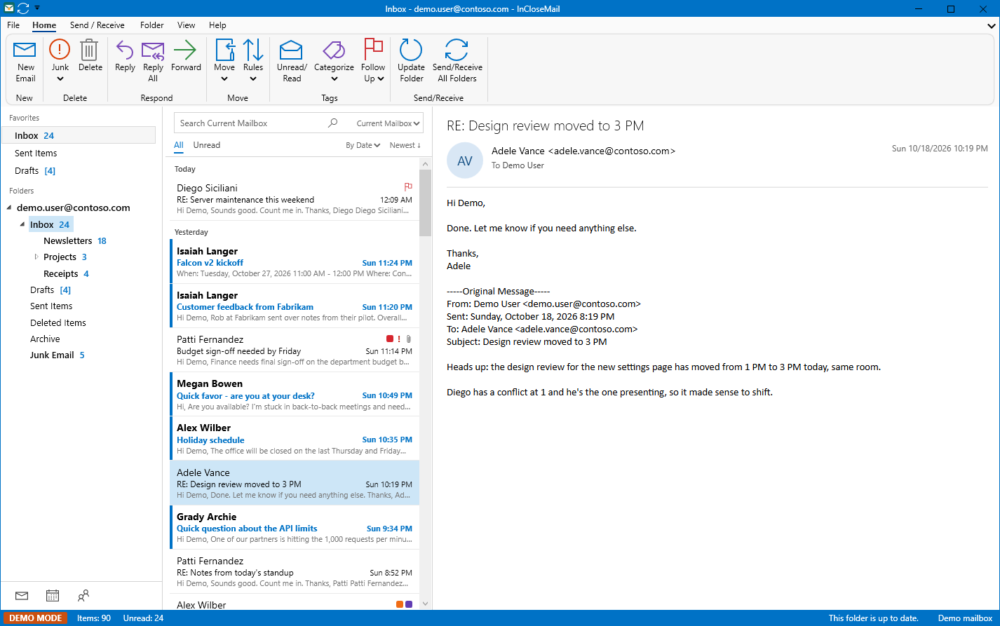

Features
- The layout you knowThe ribbon, the folder list, the message list and the reading pane.
- Calendar and contactsYour Microsoft 365 calendar and people, side by side with mail.
- Rules, signatures and searchRules that file your mail, your signatures, and fast search.
- Offline and Send/ReceiveA local copy of your mail that stays readable and searchable offline.
- “Why is this suspicious?”A plain-language explanation for messages that look like phishing.
- Reply-all guardrailsA second look before a message goes to everyone.
- Read-only modeBrowse a mailbox without changing anything.
- Light and dark modePick the look that suits you.
- MSI install for ITA standard Windows Installer package for managed deployment.
Support
Questions or problems? Email support@inclosemail.com.
InCloseMail is made by EmuKey LLC. It is not made by, endorsed by or affiliated with Microsoft. Microsoft, Microsoft 365, Outlook and Windows are trademarks of the Microsoft group of companies.